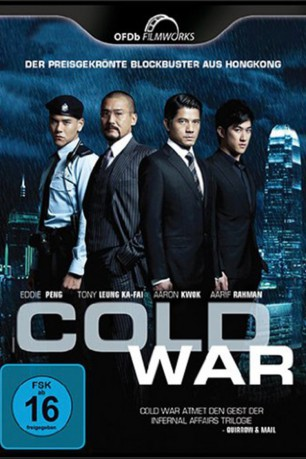
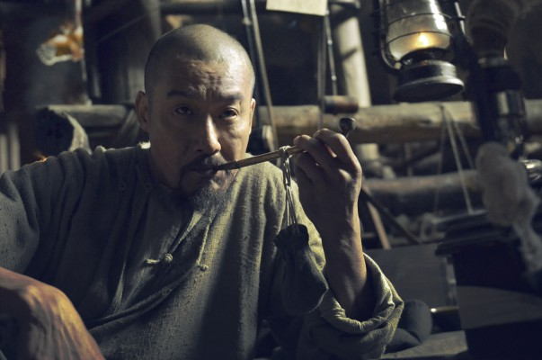
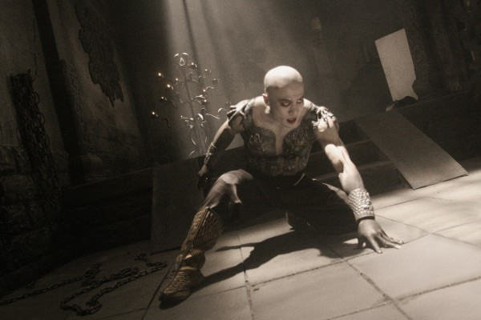
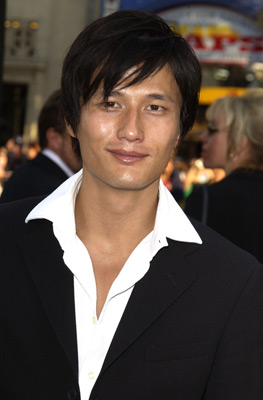
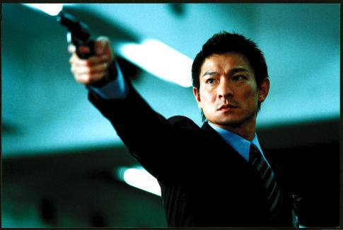
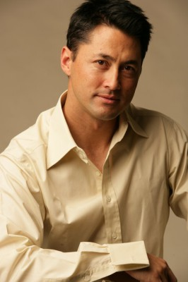
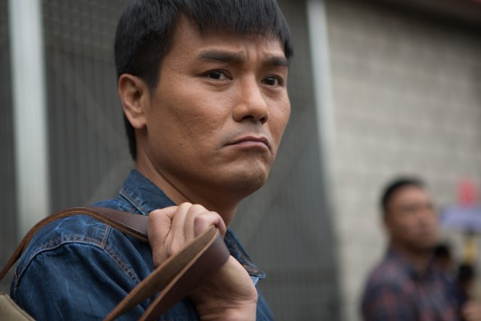
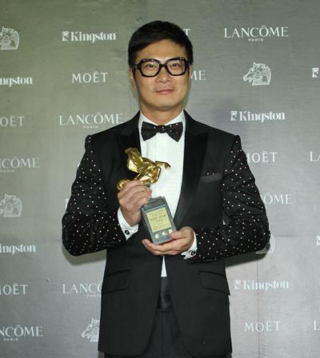
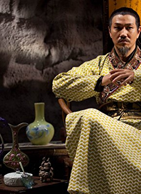

#2526 Cold War
 
 IMDB-Wertung: 6.7 / 10
IMDB-Wertung: 6.7 / 10  Metascore: 0
Metascore: 0 
Die Polizei in Hongkong gilt als stabil und unantastbar, was die Stadt zur sichersten in ganz Asien macht. Doch als ein Fremder einen Mannschaftswagen mitsamt fünf bestens ausgebildeten Polizisten entführt, ändert sich das schlagartig. Der Entführer stellt seine Forderungen bei der Polizeizentrale, er scheint bestens informiert über deren Arbeitsabläufe und ist den Ermittlern so stets einen Schritt voraus. Die Comissioner Sean Lau und Waise Lee nehmen sich des Falls an und taufen die Operation „Cold War“. Doch unter Lau und Lee entbrennt immer wieder Streit über die weitere Vorgehensweise: Sollen sie offensiv mit Polizeigewalt gegen den Entführer vorgehen oder lieber mit ihm verhandeln und heimlich nach ihm suchen? Während sie die Befreiung präzise planen, stellt sich heraus, dass die Polizisten Spielfiguren eines noch viel gefährlicheren Spiels sind.
Jahr: 2012
Dauer: 102 Minuten
FSK: 16
Land: Hong-Kong Studio: OFDb FilmworksTonspuren:
Untertitel: Deutsch,
Auflösung: 1080p (1920x800) Größe: 3317 MB
Genre: Action, Krimi, Mystery
Regisseur: Lok Man Leung, Kim-Ching Luk
Drehbuch: Lok Man Leung, Kim-Ching Luk
Soundtrack: Peter Kam
Darsteller:
- Aaron Kwok als Sean Lau
-  Tony Ka Fai Leung als M.B. Waise Lee
- Charlie Yeung als Phoenix Leung
-  Andy On als Michael Shek
-  Terence Yin als Man To
- Aarif Rahman als Billy Cheung
 Eddie Peng als Joe Lee
Eddie Peng als Joe Lee-  Andy Lau als Philip Luk
- Byron Mann als Chan Bin
-  Michael Wong als York Tsang
- Grace Huang als May Cheung
-  Ka Tung Lam als Albert Kwong
-  Kar Lok Chin als Vincent Tsui
- Yili Ma als Michelle Lau
- Alex Tsui als Mathew Mak
-  Tony Ho als William Ngai
- J.J. Jia als Janet Tsui
- Jeannie Chan als Nicole Chan
- Julius Brian Siswojo als Drunken Man
- Joyce Cheng als M.Y. Shum
- Ka-Fai Chan als Kelvin Chang
- Ka-Hung Wai als Johnny Wong
- Eric Tin Cheung Li als C. M. Leung
- Wai-Yip Ho als W. M. Kwok
- Ray Pang als Taxi Driver
- Giselle Lam als Anchor
- Singh Hartihan Bitto als Southeast Asian Man
- Raico Blue als To's Girlfriend
- Sing Wah Lau als Police Superintendent
- Lee Wah Chu als Police Superintendent
- Shiu Kong Pow als Police Superintendent
- Chi Keung Chow als Police Superintendent
- Yiu Ming Dia als Senior Police Inspector
- Leung Ho Kei als Senior Police Inspector
- Angel Ho als Senior Police Inspector
- Leanne Fu als Senior Police Inspector
- Lok Sze Ting als Senior Police Inspector
- Willy Yeung als Senior Police Inspector
- Rachel Kan als ICAC Investigator
- Elva Ni als ICAC Investigator
- Alex Mok als ICAC Investigator
- Kai Kit Lee als ICAC Investigator
- Mo-Chan Chik als SDU Team Member
- Man-Wai Luk als SDU Team Member
- Wai Yin Tse als SDU Team Member
- Wai Pun So als SDU Team Member
- Peter Chan als SDU Team Member
- Wai Fung Mak als SDU Team Member
- Wai Kit Mak als SDU Team Member
- Sheung Ying Ng als SDU Team Member
Datei: X:\HD-Eastern-Modern(A-M)\Cold War (2012, FSK16, 1920x800).mkv seit 19.11.2015
Festplatte: HD Eastern+Western
 Es gibt insgesamt 104 Filme in der Gruppe 'HD-Eastern-Modern(A-M)'
Es gibt insgesamt 104 Filme in der Gruppe 'HD-Eastern-Modern(A-M)'